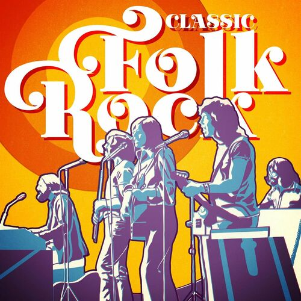
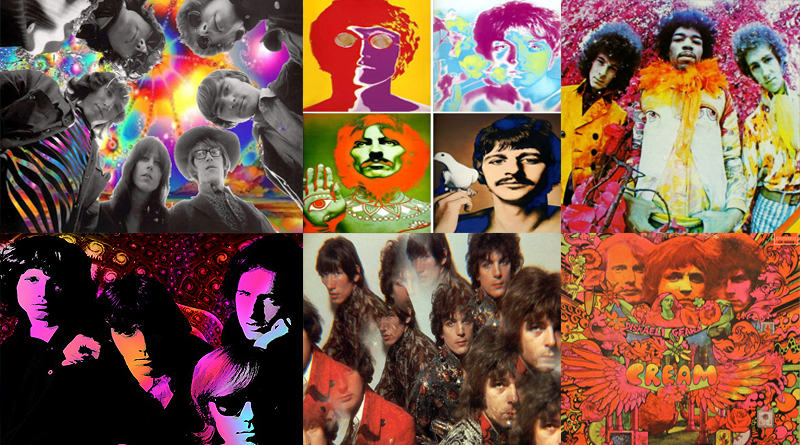

Se popularizo en 1950, pero tuvo una larga historia, a finales de 1930 se utilizaba la palabra "rhythm and blues" para referirse a ella pero poco a poco fue cambiando. Sus raices remontan de pueblos afroamericanos donde lo utilizaban como un genero muy movido y divertido para ellos. Despues ha ido teniendo una gran influencia en la musica como un genero que en las personas se seinten identificados
Podemos decir que el rock es un genero de musica protestante, siempre el rock ha sido una imagen que nos muestra la realidad de varios temas polemicos, tal es como el racismo, el sexo, las drogas y los amorios no funcionales. El rock ha sido un genero que expresa los sentimientos de sus autores, experiencias vividas o malos momentos, por eso hay varias personas que se identifican con ella.
El rock se ha dividido en varios subgeneros, cada uno tiene un tipo de melodia diferente, donde cada una puede ser tocada con diferente instrumentos o tener algo de diferente, ejemplos:
- Surf rock
- Folk rock 
- Rock psicodelico 
- Blues rock
- Punk rock
.jpg)
.jpg)